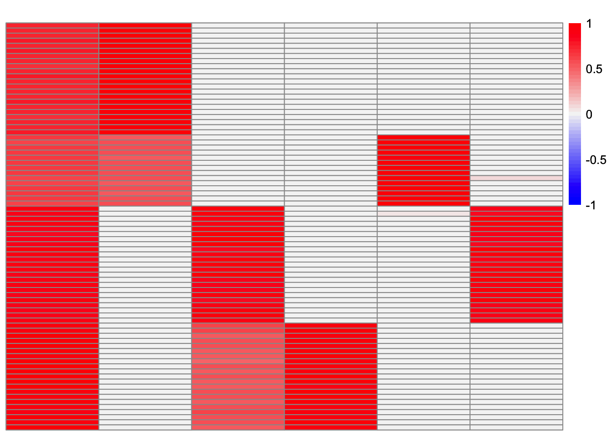
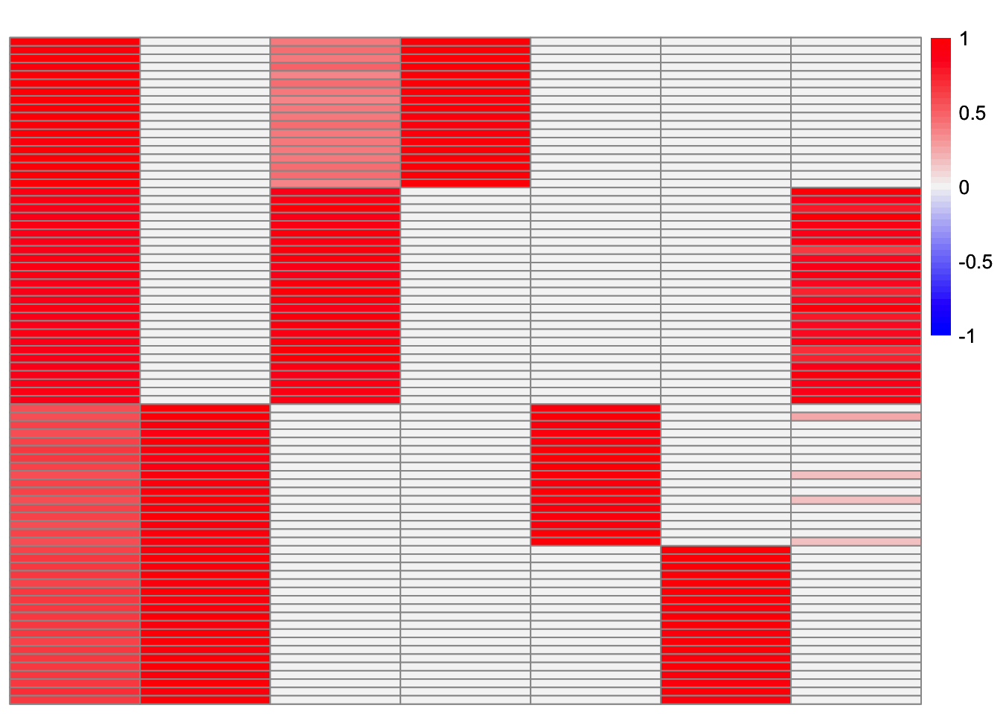
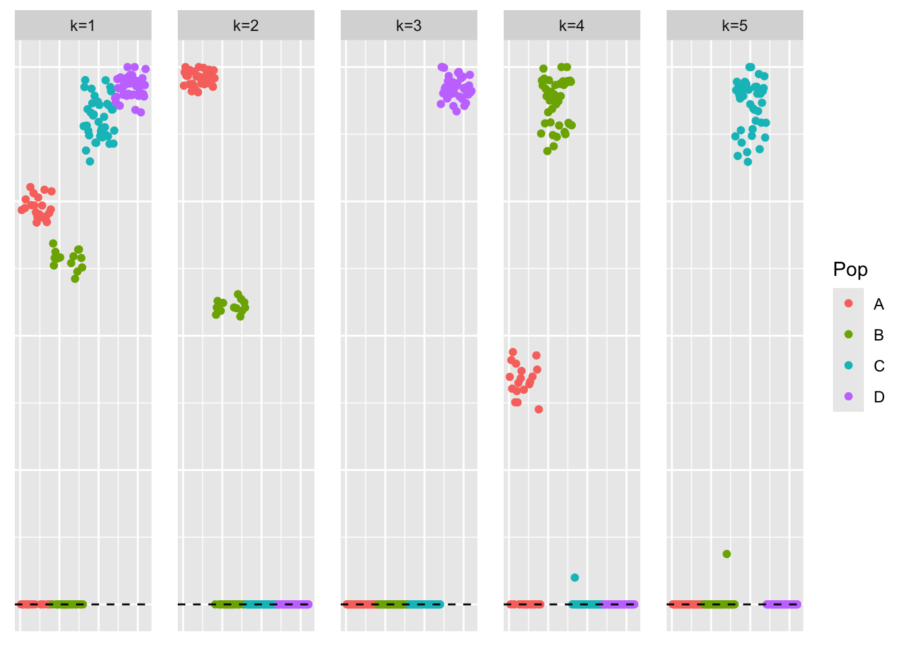

baltree_setting
Annie Xie
2025-09-11
Last updated: 2025-09-17
Checks: 7 0
Knit directory: stability_selection/
This reproducible R Markdown analysis was created with workflowr (version 1.7.1). The Checks tab describes the reproducibility checks that were applied when the results were created. The Past versions tab lists the development history.
Great! Since the R Markdown file has been committed to the Git repository, you know the exact version of the code that produced these results.
Great job! The global environment was empty. Objects defined in the global environment can affect the analysis in your R Markdown file in unknown ways. For reproduciblity it’s best to always run the code in an empty environment.
The command set.seed(20250906) was run prior to running
the code in the R Markdown file. Setting a seed ensures that any results
that rely on randomness, e.g. subsampling or permutations, are
reproducible.
Great job! Recording the operating system, R version, and package versions is critical for reproducibility.
Nice! There were no cached chunks for this analysis, so you can be confident that you successfully produced the results during this run.
Great job! Using relative paths to the files within your workflowr project makes it easier to run your code on other machines.
Great! You are using Git for version control. Tracking code development and connecting the code version to the results is critical for reproducibility.
The results in this page were generated with repository version 425e11a. See the Past versions tab to see a history of the changes made to the R Markdown and HTML files.
Note that you need to be careful to ensure that all relevant files for
the analysis have been committed to Git prior to generating the results
(you can use wflow_publish or
wflow_git_commit). workflowr only checks the R Markdown
file, but you know if there are other scripts or data files that it
depends on. Below is the status of the Git repository when the results
were generated:
Ignored files:
Ignored: .DS_Store
Ignored: .Rhistory
Ignored: .Rproj.user/
Unstaged changes:
Modified: analysis/sparse_overlap_setting.Rmd
Note that any generated files, e.g. HTML, png, CSS, etc., are not included in this status report because it is ok for generated content to have uncommitted changes.
These are the previous versions of the repository in which changes were
made to the R Markdown (analysis/baltree_setting.Rmd) and
HTML (docs/baltree_setting.html) files. If you’ve
configured a remote Git repository (see ?wflow_git_remote),
click on the hyperlinks in the table below to view the files as they
were in that past version.
| File | Version | Author | Date | Message |
|---|---|---|---|---|
| Rmd | 425e11a | Annie Xie | 2025-09-17 | Update row-split analysis in baltree setting |
| html | 1c741f3 | Annie Xie | 2025-09-11 | Build site. |
| Rmd | b240d2c | Annie Xie | 2025-09-11 | Add exploration of balanced tree setting |
Introduction
In this analysis, we are interested in testing stability selection approaches in the balanced tree setting. I am curious to see how the stability selection does in this setting because many methods struggle due to the non-identifiability issues. I’m curious to see if the subsetting of the data leads to different loadings estimates. Furthermore, will that lead to only a couple of factors being returned?
At a high level, the stability selection involves 1) splitting the data into two subsets, 2) applying the method to each subset, 3) choosing the components that have high correspondence across the two sets of results. We will test two different approaches to step 1). The first approach is splitting the data by splitting the columns. This approach feels intuitive since we are interested in the loadings matrix, which says something about the samples in the dataset. In a population genetics application, one could argue that all of the chromosomes are undergoing evolution independently, and so you could split the data by even vs. odd chromosomes to get two different datasets. However, in a single-cell RNA-seq application, it feels more natural to split the data by cells – this feels more like creating sub-datasets compared to splitting by genes (unless you want to make some assumption that the genes are pulled from a “population”, but I think that feels less natural). This motivates the second approach: splitting the data by splitting the rows.
library(dplyr)
library(ggplot2)
library(pheatmap)source('code/visualization_functions.R')
source('code/stability_selection_functions.R')Data Generation
In this analysis, we will focus on the balanced tree setting.
sim_4pops <- function(args) {
set.seed(args$seed)
n <- sum(args$pop_sizes)
p <- args$n_genes
FF <- matrix(rnorm(7 * p, sd = rep(args$branch_sds, each = p)), ncol = 7)
# if (args$constrain_F) {
# FF_svd <- svd(FF)
# FF <- FF_svd$u
# FF <- t(t(FF) * branch_sds * sqrt(p))
# }
LL <- matrix(0, nrow = n, ncol = 7)
LL[, 1] <- 1
LL[, 2] <- rep(c(1, 1, 0, 0), times = args$pop_sizes)
LL[, 3] <- rep(c(0, 0, 1, 1), times = args$pop_sizes)
LL[, 4] <- rep(c(1, 0, 0, 0), times = args$pop_sizes)
LL[, 5] <- rep(c(0, 1, 0, 0), times = args$pop_sizes)
LL[, 6] <- rep(c(0, 0, 1, 0), times = args$pop_sizes)
LL[, 7] <- rep(c(0, 0, 0, 1), times = args$pop_sizes)
E <- matrix(rnorm(n * p, sd = args$indiv_sd), nrow = n)
Y <- LL %*% t(FF) + E
YYt <- (1/p)*tcrossprod(Y)
return(list(Y = Y, YYt = YYt, LL = LL, FF = FF, K = ncol(LL)))
}sim_args = list(pop_sizes = rep(40, 4), n_genes = 1000, branch_sds = rep(2,7), indiv_sd = 1, seed = 1)
sim_data <- sim_4pops(sim_args)This is a heatmap of the true loadings matrix:
plot_heatmap(sim_data$LL)
| Version | Author | Date |
|---|---|---|
| 1c741f3 | Annie Xie | 2025-09-11 |
GBCD
In this section, I try stability selection with the GBCD method. In my experiments, I’ve found that GBCD tends to return extra factors (partially because the point-Laplace initialization will yield extra factors). GBCD usually does a good job at recovering the correct number of components in the tree setting, so I expect the method will still return most, if not all of the factors.
Stability Selection via Splitting Columns
First, I try splitting the data by splitting the columns.
set.seed(1)
X_split_by_col <- stability_selection_split_data(sim_data$Y, dim = 'columns')gbcd_fits_by_col <- list()
for (i in 1:(length(X_split_by_col)-2)){
gbcd_fits_by_col[[i]] <- gbcd::fit_gbcd(X_split_by_col[[i]],
Kmax = 7,
prior = ebnm::ebnm_generalized_binary,
verbose = 0)$L
}[1] "Form cell by cell covariance matrix..."
user system elapsed
0.005 0.001 0.005
[1] "Initialize GEP membership matrix L..."
Adding factor 1 to flash object...
Wrapping up...
Done.
Adding factor 2 to flash object...
Adding factor 3 to flash object...
Adding factor 4 to flash object...
Adding factor 5 to flash object...
Factor doesn't significantly increase objective and won't be added.
Wrapping up...
Done.Warning in report.maxiter.reached(verbose.lvl): Maximum number of iterations
reached. user system elapsed
1.096 0.034 1.132
[1] "Estimate GEP membership matrix L..."Warning in report.maxiter.reached(verbose.lvl): Maximum number of iterations
reached.
Warning in report.maxiter.reached(verbose.lvl): Maximum number of iterations
reached.
Warning in report.maxiter.reached(verbose.lvl): Maximum number of iterations
reached. user system elapsed
11.445 0.210 11.656
[1] "Estimate GEP signature matrix F..."
Backfitting 7 factors (tolerance: 1.19e-03)...
Difference between iterations is within 1.0e+00...
Difference between iterations is within 1.0e-01...
--Maximum number of iterations reached!
Wrapping up...
Done.
user system elapsed
11.312 0.219 11.535
[1] "Form cell by cell covariance matrix..."
user system elapsed
0.006 0.001 0.006
[1] "Initialize GEP membership matrix L..."
Adding factor 1 to flash object...
Wrapping up...
Done.
Adding factor 2 to flash object...
Adding factor 3 to flash object...
Adding factor 4 to flash object...
Adding factor 5 to flash object...
Factor doesn't significantly increase objective and won't be added.
Wrapping up...
Done.Warning in report.maxiter.reached(verbose.lvl): Maximum number of iterations
reached. user system elapsed
3.613 0.100 3.714
[1] "Estimate GEP membership matrix L..."Warning in report.maxiter.reached(verbose.lvl): Maximum number of iterations
reached.
Warning in report.maxiter.reached(verbose.lvl): Maximum number of iterations
reached.
Warning in report.maxiter.reached(verbose.lvl): Maximum number of iterations
reached. user system elapsed
11.021 0.103 11.125
[1] "Estimate GEP signature matrix F..."
Backfitting 7 factors (tolerance: 1.19e-03)...
Difference between iterations is within 1.0e+00...
Difference between iterations is within 1.0e-01...
--Maximum number of iterations reached!
Wrapping up...
Done.
user system elapsed
11.273 0.095 11.405 This is heatmap of the loadings estimate from the first subset:
plot_heatmap(gbcd_fits_by_col[[1]], colors_range = c('blue','gray96','red'), brks = seq(-max(abs(gbcd_fits_by_col[[1]])), max(abs(gbcd_fits_by_col[[1]])), length.out = 50))
| Version | Author | Date |
|---|---|---|
| 1c741f3 | Annie Xie | 2025-09-11 |
This is a heatmap of the loadings estimate from the second subset:
plot_heatmap(gbcd_fits_by_col[[2]], colors_range = c('blue','gray96','red'), brks = seq(-max(abs(gbcd_fits_by_col[[2]])), max(abs(gbcd_fits_by_col[[2]])), length.out = 50))
| Version | Author | Date |
|---|---|---|
| 1c741f3 | Annie Xie | 2025-09-11 |
results_by_col <- stability_selection_post_processing(gbcd_fits_by_col[[1]], gbcd_fits_by_col[[2]], threshold = 0.8)
L_est_by_col <- results_by_col$LThis is the similarity matrix:
results_by_col$similarity Baseline GEP1 GEP2 GEP3 GEP4
Baseline 0.9927388 6.287091e-01 7.735109e-01 5.253091e-01 4.160405e-01
GEP1 0.7112064 9.955245e-01 5.112972e-27 1.039842e-02 6.593551e-01
GEP2 0.6903708 2.466416e-26 9.831194e-01 7.902523e-01 5.368280e-03
GEP3 0.5182497 2.696930e-03 7.367773e-01 7.859501e-13 2.148563e-11
GEP4 0.4867941 7.179133e-01 1.746589e-02 3.521849e-02 9.986109e-01
GEP5 0.5330212 6.938157e-01 5.979679e-03 8.401774e-04 2.139552e-21
GEP6 0.4927173 2.778865e-02 6.724409e-01 9.961337e-01 4.010967e-02
GEP5 GEP6
Baseline 0.4857020261 0.579062680
GEP1 0.7501579865 0.008245232
GEP2 0.0091566918 0.608618550
GEP3 0.0147885149 0.998367881
GEP4 0.0001681336 0.005194144
GEP5 0.9982772468 0.019113564
GEP6 0.0087534327 0.000195305This is a heatmap of the final loadings estimate:
plot_heatmap(L_est_by_col, colors_range = c('blue','gray96','red'), brks = seq(-max(abs(L_est_by_col)), max(abs(L_est_by_col)), length.out = 50))This is the cosine similarity between the estimate and the true loadings matrix:
est_true_cos_sim <- compute_cosine_sim_matrix(L_est_by_col, sim_data$LL)
apply(abs(est_true_cos_sim), 1, max) Baseline GEP1 GEP2 GEP3 GEP4 GEP5 GEP6
0.9922811 0.9974886 0.9902582 0.9995972 0.9988175 0.9991322 0.9965470 In this case, the method was able to recover all seven factors with high accuracy.
Stability Selection via Splitting Rows
Now, we try splitting the rows:
set.seed(1)
X_split_by_row <- stability_selection_split_data(sim_data$Y, dim = 'rows')gbcd_fits_by_row_F <- list()
gbcd_fits_by_row_L <- list()
for (i in 1:(length(X_split_by_row)-2)){
gbcd_fit <- gbcd::fit_gbcd(X_split_by_row[[i]],
Kmax = 4,
prior = ebnm::ebnm_generalized_binary,
verbose = 0)
gbcd_fits_by_row_F[[i]] <- gbcd_fit$F$lfc
gbcd_fits_by_row_L[[i]] <- gbcd_fit$L
}[1] "Form cell by cell covariance matrix..."
user system elapsed
0.002 0.000 0.002
[1] "Initialize GEP membership matrix L..."
Adding factor 1 to flash object...
Wrapping up...
Done.
Adding factor 2 to flash object...
Adding factor 3 to flash object...
Adding factor 4 to flash object...
Wrapping up...
Done.Warning in report.maxiter.reached(verbose.lvl): Maximum number of iterations
reached. user system elapsed
2.166 0.067 2.233
[1] "Estimate GEP membership matrix L..."Warning in report.maxiter.reached(verbose.lvl): Maximum number of iterations
reached.
Warning in report.maxiter.reached(verbose.lvl): Maximum number of iterations
reached. --Estimate of factor 4 is numerically zero!Warning in report.maxiter.reached(verbose.lvl): Maximum number of iterations
reached. user system elapsed
19.431 0.375 19.808
[1] "Estimate GEP signature matrix F..."
Backfitting 6 factors (tolerance: 1.19e-03)...
--Estimate of factor 3 is numerically zero!
An update to factor 3 decreased the objective by 1.191e-02.
--Estimate of factor 3 is numerically zero!
An update to factor 3 decreased the objective by 1.191e-02.
--Estimate of factor 3 is numerically zero!
An update to factor 3 decreased the objective by 1.191e-02.
An update to factor 3 decreased the objective by 9.334e-03.
An update to factor 3 decreased the objective by 1.176e-02.
An update to factor 3 decreased the objective by 5.885e-03.
An update to factor 3 decreased the objective by 9.824e-03.
An update to factor 3 decreased the objective by 1.020e-02.
--Estimate of factor 3 is numerically zero!
An update to factor 3 decreased the objective by 1.191e-02.
An update to factor 3 decreased the objective by 1.158e-02.
An update to factor 3 decreased the objective by 9.174e-03.
An update to factor 3 decreased the objective by 4.400e-03.
--Estimate of factor 3 is numerically zero!
An update to factor 3 decreased the objective by 1.191e-02.
--Estimate of factor 3 is numerically zero!
An update to factor 3 decreased the objective by 1.191e-02.
An update to factor 3 decreased the objective by 1.173e-02.
--Estimate of factor 3 is numerically zero!
An update to factor 3 decreased the objective by 1.191e-02.
An update to factor 3 decreased the objective by 9.692e-03.
--Estimate of factor 3 is numerically zero!
An update to factor 3 decreased the objective by 1.191e-02.
An update to factor 3 decreased the objective by 8.144e-03.
--Estimate of factor 3 is numerically zero!
An update to factor 3 decreased the objective by 1.191e-02.
--Estimate of factor 3 is numerically zero!
An update to factor 3 decreased the objective by 1.191e-02.
--Estimate of factor 3 is numerically zero!
An update to factor 3 decreased the objective by 1.191e-02.
An update to factor 3 decreased the objective by 1.027e-02.
--Estimate of factor 3 is numerically zero!
An update to factor 3 decreased the objective by 1.191e-02.
--Estimate of factor 3 is numerically zero!
An update to factor 3 decreased the objective by 1.191e-02.
--Estimate of factor 3 is numerically zero!
An update to factor 3 decreased the objective by 1.191e-02.
An update to factor 3 decreased the objective by 1.119e-02.
--Estimate of factor 3 is numerically zero!
An update to factor 3 decreased the objective by 1.191e-02.
--Estimate of factor 3 is numerically zero!
An update to factor 3 decreased the objective by 1.191e-02.
--Estimate of factor 3 is numerically zero!
An update to factor 3 decreased the objective by 1.191e-02.
An update to factor 3 decreased the objective by 2.639e-03.
--Estimate of factor 3 is numerically zero!
An update to factor 3 decreased the objective by 1.191e-02.
An update to factor 3 decreased the objective by 9.254e-03.
--Estimate of factor 3 is numerically zero!
An update to factor 3 decreased the objective by 1.191e-02.
An update to factor 3 decreased the objective by 8.439e-03.
--Estimate of factor 3 is numerically zero!
An update to factor 3 decreased the objective by 1.191e-02.
--Estimate of factor 3 is numerically zero!
An update to factor 3 decreased the objective by 1.191e-02.
An update to factor 3 decreased the objective by 1.018e-02.
--Estimate of factor 3 is numerically zero!
An update to factor 3 decreased the objective by 1.191e-02.
--Estimate of factor 3 is numerically zero!
An update to factor 3 decreased the objective by 1.191e-02.
An update to factor 3 decreased the objective by 9.387e-03.
An update to factor 3 decreased the objective by 3.533e-03.
--Estimate of factor 3 is numerically zero!
An update to factor 3 decreased the objective by 1.191e-02.
An update to factor 3 decreased the objective by 5.910e-03.
An update to factor 3 decreased the objective by 4.815e-03.
An update to factor 3 decreased the objective by 9.739e-03.
--Estimate of factor 3 is numerically zero!
An update to factor 3 decreased the objective by 1.191e-02.
An update to factor 3 decreased the objective by 1.094e-02.
--Estimate of factor 3 is numerically zero!
An update to factor 3 decreased the objective by 1.191e-02.
--Estimate of factor 3 is numerically zero!
An update to factor 3 decreased the objective by 1.191e-02.
--Estimate of factor 3 is numerically zero!
An update to factor 3 decreased the objective by 1.191e-02.
An update to factor 3 decreased the objective by 1.074e-02.
An update to factor 3 decreased the objective by 4.067e-03.
--Estimate of factor 3 is numerically zero!
An update to factor 3 decreased the objective by 1.192e-02.
An update to factor 3 decreased the objective by 1.071e-02.
An update to factor 3 decreased the objective by 7.298e-03.
An update to factor 3 decreased the objective by 1.103e-02.
An update to factor 3 decreased the objective by 7.240e-03.
--Estimate of factor 3 is numerically zero!
An update to factor 3 decreased the objective by 1.192e-02.
--Estimate of factor 3 is numerically zero!
An update to factor 3 decreased the objective by 1.192e-02.
An update to factor 3 decreased the objective by 7.322e-03.
--Estimate of factor 3 is numerically zero!
An update to factor 3 decreased the objective by 1.192e-02.
An update to factor 3 decreased the objective by 1.017e-02.
--Estimate of factor 3 is numerically zero!
An update to factor 3 decreased the objective by 1.192e-02.
--Estimate of factor 3 is numerically zero!
An update to factor 3 decreased the objective by 1.192e-02.
An update to factor 3 decreased the objective by 9.790e-03.
--Estimate of factor 3 is numerically zero!
An update to factor 3 decreased the objective by 1.192e-02.
An update to factor 3 decreased the objective by 1.111e-02.
An update to factor 3 decreased the objective by 6.359e-03.
An update to factor 3 decreased the objective by 6.520e-03.
An update to factor 3 decreased the objective by 8.445e-03.
An update to factor 3 decreased the objective by 5.001e-03.
An update to factor 3 decreased the objective by 5.597e-03.
--Estimate of factor 3 is numerically zero!
An update to factor 3 decreased the objective by 1.192e-02.
An update to factor 3 decreased the objective by 1.007e-02.
--Estimate of factor 3 is numerically zero!
An update to factor 3 decreased the objective by 1.192e-02.
An update to factor 3 decreased the objective by 9.943e-03.
An update to factor 3 decreased the objective by 8.865e-03.
An update to factor 3 decreased the objective by 8.667e-03.
--Estimate of factor 3 is numerically zero!
An update to factor 3 decreased the objective by 1.192e-02.
--Estimate of factor 3 is numerically zero!
An update to factor 3 decreased the objective by 1.192e-02.
An update to factor 3 decreased the objective by 7.512e-03.
--Estimate of factor 3 is numerically zero!
An update to factor 3 decreased the objective by 1.192e-02.
--Estimate of factor 3 is numerically zero!
An update to factor 3 decreased the objective by 1.192e-02.
--Estimate of factor 3 is numerically zero!
An update to factor 3 decreased the objective by 1.192e-02.
--Estimate of factor 3 is numerically zero!
An update to factor 3 decreased the objective by 1.192e-02.
An update to factor 3 decreased the objective by 9.163e-03.
--Estimate of factor 3 is numerically zero!
An update to factor 3 decreased the objective by 1.192e-02.
--Estimate of factor 3 is numerically zero!
An update to factor 3 decreased the objective by 1.192e-02.
--Estimate of factor 3 is numerically zero!
An update to factor 3 decreased the objective by 1.192e-02.
An update to factor 3 decreased the objective by 9.009e-03.
--Estimate of factor 3 is numerically zero!
An update to factor 3 decreased the objective by 1.192e-02.
--Estimate of factor 3 is numerically zero!
An update to factor 3 decreased the objective by 1.192e-02.
--Estimate of factor 3 is numerically zero!
An update to factor 3 decreased the objective by 1.192e-02.
--Estimate of factor 3 is numerically zero!
An update to factor 3 decreased the objective by 1.192e-02.
--Estimate of factor 3 is numerically zero!
An update to factor 3 decreased the objective by 1.192e-02.
--Estimate of factor 3 is numerically zero!
An update to factor 3 decreased the objective by 1.192e-02.
An update to factor 3 decreased the objective by 1.152e-02.
Difference between iterations is within 1.0e+00...
--Estimate of factor 3 is numerically zero!
An update to factor 3 decreased the objective by 1.192e-02.
--Estimate of factor 3 is numerically zero!
An update to factor 3 decreased the objective by 1.192e-02.
--Estimate of factor 3 is numerically zero!
An update to factor 3 decreased the objective by 1.192e-02.
--Estimate of factor 3 is numerically zero!
An update to factor 3 decreased the objective by 1.192e-02.
--Estimate of factor 3 is numerically zero!
An update to factor 3 decreased the objective by 1.192e-02.
--Estimate of factor 3 is numerically zero!
An update to factor 3 decreased the objective by 1.192e-02.
--Estimate of factor 3 is numerically zero!
An update to factor 3 decreased the objective by 1.192e-02.
--Estimate of factor 3 is numerically zero!
An update to factor 3 decreased the objective by 1.192e-02.
--Estimate of factor 3 is numerically zero!
An update to factor 3 decreased the objective by 1.192e-02.
An update to factor 3 decreased the objective by 1.132e-02.
--Estimate of factor 3 is numerically zero!
An update to factor 3 decreased the objective by 1.192e-02.
--Estimate of factor 3 is numerically zero!
An update to factor 3 decreased the objective by 1.192e-02.
--Estimate of factor 3 is numerically zero!
An update to factor 3 decreased the objective by 1.192e-02.
An update to factor 3 decreased the objective by 3.089e-03.
An update to factor 3 decreased the objective by 5.867e-03.
--Estimate of factor 3 is numerically zero!
An update to factor 3 decreased the objective by 1.192e-02.
--Estimate of factor 3 is numerically zero!
An update to factor 3 decreased the objective by 1.192e-02.
An update to factor 3 decreased the objective by 8.489e-03.
An update to factor 3 decreased the objective by 3.174e-03.
--Estimate of factor 3 is numerically zero!
An update to factor 3 decreased the objective by 1.192e-02.
--Estimate of factor 3 is numerically zero!
An update to factor 3 decreased the objective by 1.192e-02.
An update to factor 3 decreased the objective by 1.176e-02.
An update to factor 3 decreased the objective by 5.992e-03.
--Estimate of factor 3 is numerically zero!
An update to factor 3 decreased the objective by 1.192e-02.
An update to factor 3 decreased the objective by 2.435e-03.
An update to factor 3 decreased the objective by 9.108e-03.
An update to factor 3 decreased the objective by 9.641e-03.
--Estimate of factor 3 is numerically zero!
An update to factor 3 decreased the objective by 1.192e-02.
--Estimate of factor 3 is numerically zero!
An update to factor 3 decreased the objective by 1.192e-02.
--Estimate of factor 3 is numerically zero!
An update to factor 3 decreased the objective by 1.192e-02.
An update to factor 3 decreased the objective by 5.665e-03.
An update to factor 3 decreased the objective by 7.345e-03.
An update to factor 3 decreased the objective by 6.133e-03.
--Estimate of factor 3 is numerically zero!
An update to factor 3 decreased the objective by 1.192e-02.
An update to factor 3 decreased the objective by 3.328e-03.
An update to factor 3 decreased the objective by 1.812e-03.
--Estimate of factor 3 is numerically zero!
An update to factor 3 decreased the objective by 1.242e-02.
An update to factor 3 decreased the objective by 1.199e-02.
--Estimate of factor 3 is numerically zero!
An update to factor 3 decreased the objective by 1.242e-02.
An update to factor 3 decreased the objective by 1.220e-02.
--Estimate of factor 3 is numerically zero!
An update to factor 3 decreased the objective by 1.242e-02.
--Estimate of factor 3 is numerically zero!
An update to factor 3 decreased the objective by 1.242e-02.
An update to factor 3 decreased the objective by 1.132e-02.
An update to factor 3 decreased the objective by 1.092e-03.
An update to factor 3 decreased the objective by 5.903e-03.
An update to factor 3 decreased the objective by 8.350e-03.
An update to factor 3 decreased the objective by 1.083e-02.
--Estimate of factor 3 is numerically zero!
An update to factor 3 decreased the objective by 1.242e-02.
--Estimate of factor 3 is numerically zero!
An update to factor 3 decreased the objective by 1.242e-02.
--Estimate of factor 3 is numerically zero!
An update to factor 3 decreased the objective by 1.242e-02.
An update to factor 3 decreased the objective by 9.801e-03.
--Estimate of factor 3 is numerically zero!
An update to factor 3 decreased the objective by 1.242e-02.
An update to factor 3 decreased the objective by 4.158e-03.
An update to factor 3 decreased the objective by 7.064e-03.
An update to factor 3 decreased the objective by 1.100e-02.
An update to factor 3 decreased the objective by 8.485e-03.
An update to factor 3 decreased the objective by 2.664e-03.
An update to factor 3 decreased the objective by 3.255e-03.
--Estimate of factor 3 is numerically zero!
An update to factor 3 decreased the objective by 1.242e-02.
--Estimate of factor 3 is numerically zero!
An update to factor 3 decreased the objective by 1.242e-02.
--Estimate of factor 3 is numerically zero!
An update to factor 3 decreased the objective by 1.242e-02.
--Estimate of factor 3 is numerically zero!
An update to factor 3 decreased the objective by 1.242e-02.
--Estimate of factor 3 is numerically zero!
An update to factor 3 decreased the objective by 1.242e-02.
--Estimate of factor 3 is numerically zero!
An update to factor 3 decreased the objective by 1.242e-02.
An update to factor 3 decreased the objective by 1.134e-02.
An update to factor 3 decreased the objective by 1.157e-02.
--Estimate of factor 3 is numerically zero!
An update to factor 3 decreased the objective by 1.242e-02.
--Estimate of factor 3 is numerically zero!
An update to factor 3 decreased the objective by 1.242e-02.
--Estimate of factor 3 is numerically zero!
An update to factor 3 decreased the objective by 1.242e-02.
An update to factor 3 decreased the objective by 1.002e-02.
--Estimate of factor 3 is numerically zero!
An update to factor 3 decreased the objective by 1.242e-02.
An update to factor 3 decreased the objective by 1.078e-02.
An update to factor 3 decreased the objective by 2.850e-03.
--Estimate of factor 3 is numerically zero!
An update to factor 3 decreased the objective by 1.242e-02.
An update to factor 3 decreased the objective by 1.164e-02.
An update to factor 3 decreased the objective by 1.020e-03.
An update to factor 3 decreased the objective by 7.611e-03.
--Estimate of factor 3 is numerically zero!
An update to factor 3 decreased the objective by 1.242e-02.
--Estimate of factor 3 is numerically zero!
An update to factor 3 decreased the objective by 1.242e-02.
--Estimate of factor 3 is numerically zero!
An update to factor 3 decreased the objective by 1.242e-02.
An update to factor 3 decreased the objective by 9.668e-03.
An update to factor 3 decreased the objective by 2.912e-03.
An update to factor 3 decreased the objective by 3.894e-03.
--Estimate of factor 3 is numerically zero!
An update to factor 3 decreased the objective by 1.242e-02.
An update to factor 3 decreased the objective by 1.208e-02.
An update to factor 3 decreased the objective by 8.828e-03.
An update to factor 3 decreased the objective by 1.151e-02.
An update to factor 3 decreased the objective by 2.246e-03.
An update to factor 3 decreased the objective by 1.011e-02.
An update to factor 3 decreased the objective by 7.561e-03.
An update to factor 3 decreased the objective by 1.045e-02.
An update to factor 3 decreased the objective by 2.773e-03.
--Estimate of factor 3 is numerically zero!
An update to factor 3 decreased the objective by 1.242e-02.
--Estimate of factor 3 is numerically zero!
An update to factor 3 decreased the objective by 1.242e-02.
--Estimate of factor 3 is numerically zero!
An update to factor 3 decreased the objective by 1.242e-02.
An update to factor 3 decreased the objective by 3.289e-03.
An update to factor 3 decreased the objective by 1.073e-02.
An update to factor 3 decreased the objective by 5.440e-03.
An update to factor 3 decreased the objective by 1.216e-02.
An update to factor 3 decreased the objective by 9.660e-03.
An update to factor 3 decreased the objective by 8.360e-03.
An update to factor 3 decreased the objective by 5.054e-03.
An update to factor 3 decreased the objective by 1.212e-02.
--Estimate of factor 3 is numerically zero!
An update to factor 3 decreased the objective by 1.242e-02.
An update to factor 3 decreased the objective by 7.326e-03.
An update to factor 3 decreased the objective by 8.376e-03.
An update to factor 3 decreased the objective by 1.078e-03.
An update to factor 3 decreased the objective by 2.768e-03.
An update to factor 3 decreased the objective by 7.346e-03.
--Estimate of factor 3 is numerically zero!
An update to factor 3 decreased the objective by 1.242e-02.
An update to factor 3 decreased the objective by 1.110e-02.
--Estimate of factor 3 is numerically zero!
An update to factor 3 decreased the objective by 1.242e-02.
--Estimate of factor 3 is numerically zero!
An update to factor 3 decreased the objective by 1.242e-02.
An update to factor 3 decreased the objective by 3.163e-03.
--Estimate of factor 3 is numerically zero!
An update to factor 3 decreased the objective by 1.242e-02.
--Estimate of factor 3 is numerically zero!
An update to factor 3 decreased the objective by 1.242e-02.
--Estimate of factor 3 is numerically zero!
An update to factor 3 decreased the objective by 1.242e-02.
An update to factor 3 decreased the objective by 2.813e-03.
An update to factor 3 decreased the objective by 6.790e-03.
An update to factor 3 decreased the objective by 4.964e-03.
An update to factor 3 decreased the objective by 3.860e-03.
An update to factor 3 decreased the objective by 6.357e-03.
--Estimate of factor 3 is numerically zero!
An update to factor 3 decreased the objective by 1.242e-02.
--Estimate of factor 3 is numerically zero!
An update to factor 3 decreased the objective by 1.242e-02.
An update to factor 3 decreased the objective by 5.322e-03.
--Estimate of factor 3 is numerically zero!
An update to factor 3 decreased the objective by 1.242e-02.
An update to factor 3 decreased the objective by 3.741e-03.
--Estimate of factor 3 is numerically zero!
An update to factor 3 decreased the objective by 1.242e-02.
An update to factor 3 decreased the objective by 6.170e-03.
--Estimate of factor 3 is numerically zero!
An update to factor 3 decreased the objective by 1.242e-02.
An update to factor 3 decreased the objective by 6.134e-03.
--Estimate of factor 3 is numerically zero!
An update to factor 3 decreased the objective by 1.242e-02.
--Estimate of factor 3 is numerically zero!
An update to factor 3 decreased the objective by 1.242e-02.
An update to factor 3 decreased the objective by 6.490e-03.
An update to factor 3 decreased the objective by 5.265e-03.
--Estimate of factor 3 is numerically zero!
An update to factor 3 decreased the objective by 1.242e-02.
--Estimate of factor 3 is numerically zero!
An update to factor 3 decreased the objective by 1.242e-02.
--Estimate of factor 3 is numerically zero!
An update to factor 3 decreased the objective by 1.242e-02.
--Estimate of factor 3 is numerically zero!
An update to factor 3 decreased the objective by 1.242e-02.
--Estimate of factor 3 is numerically zero!
An update to factor 3 decreased the objective by 1.242e-02.
--Estimate of factor 3 is numerically zero!
An update to factor 3 decreased the objective by 1.242e-02.
An update to factor 3 decreased the objective by 6.147e-03.
An update to factor 3 decreased the objective by 5.821e-03.
--Estimate of factor 3 is numerically zero!
An update to factor 3 decreased the objective by 1.242e-02.
--Estimate of factor 3 is numerically zero!
An update to factor 3 decreased the objective by 1.242e-02.
An update to factor 3 decreased the objective by 8.612e-03.
An update to factor 3 decreased the objective by 4.251e-03.
An update to factor 3 decreased the objective by 3.138e-03.
An update to factor 3 decreased the objective by 3.835e-03.
--Estimate of factor 3 is numerically zero!
An update to factor 3 decreased the objective by 1.242e-02.
--Estimate of factor 3 is numerically zero!
An update to factor 3 decreased the objective by 1.242e-02.
An update to factor 3 decreased the objective by 8.399e-03.
--Estimate of factor 3 is numerically zero!
An update to factor 3 decreased the objective by 1.242e-02.
An update to factor 3 decreased the objective by 7.748e-03.
An update to factor 3 decreased the objective by 4.587e-03.
An update to factor 3 decreased the objective by 9.100e-03.
An update to factor 3 decreased the objective by 8.357e-03.
An update to factor 3 decreased the objective by 9.109e-03.
--Estimate of factor 3 is numerically zero!
An update to factor 3 decreased the objective by 1.242e-02.
--Estimate of factor 3 is numerically zero!
An update to factor 3 decreased the objective by 1.242e-02.
--Estimate of factor 3 is numerically zero!
An update to factor 3 decreased the objective by 1.242e-02.
--Estimate of factor 3 is numerically zero!
An update to factor 3 decreased the objective by 1.242e-02.
--Estimate of factor 3 is numerically zero!
An update to factor 3 decreased the objective by 1.242e-02.
An update to factor 3 decreased the objective by 1.055e-02.
--Estimate of factor 3 is numerically zero!
An update to factor 3 decreased the objective by 1.242e-02.
--Estimate of factor 3 is numerically zero!
An update to factor 3 decreased the objective by 1.242e-02.
--Estimate of factor 3 is numerically zero!
An update to factor 3 decreased the objective by 1.242e-02.
--Estimate of factor 3 is numerically zero!
An update to factor 3 decreased the objective by 1.242e-02.
An update to factor 3 decreased the objective by 2.867e-03.
An update to factor 3 decreased the objective by 9.935e-03.
An update to factor 3 decreased the objective by 1.117e-02.
--Estimate of factor 3 is numerically zero!
An update to factor 3 decreased the objective by 1.242e-02.
--Estimate of factor 3 is numerically zero!
An update to factor 3 decreased the objective by 1.242e-02.
--Estimate of factor 3 is numerically zero!
An update to factor 3 decreased the objective by 1.242e-02.
--Estimate of factor 3 is numerically zero!
An update to factor 3 decreased the objective by 1.242e-02.
--Estimate of factor 3 is numerically zero!
An update to factor 3 decreased the objective by 1.242e-02.
An update to factor 3 decreased the objective by 5.636e-03.
--Estimate of factor 3 is numerically zero!
An update to factor 3 decreased the objective by 1.242e-02.
An update to factor 3 decreased the objective by 4.167e-03.
--Estimate of factor 3 is numerically zero!
An update to factor 3 decreased the objective by 1.242e-02.
An update to factor 3 decreased the objective by 6.564e-03.
An update to factor 3 decreased the objective by 1.063e-02.
An update to factor 3 decreased the objective by 8.801e-03.
An update to factor 3 decreased the objective by 8.341e-03.
--Estimate of factor 3 is numerically zero!
An update to factor 3 decreased the objective by 1.242e-02.
An update to factor 3 decreased the objective by 6.734e-03.
--Estimate of factor 3 is numerically zero!
An update to factor 3 decreased the objective by 1.242e-02.
An update to factor 3 decreased the objective by 6.105e-03.
An update to factor 3 decreased the objective by 1.044e-02.
An update to factor 3 decreased the objective by 6.360e-03.
An update to factor 3 decreased the objective by 1.115e-02.
--Estimate of factor 3 is numerically zero!
An update to factor 3 decreased the objective by 1.242e-02.
--Estimate of factor 3 is numerically zero!
An update to factor 3 decreased the objective by 1.242e-02.
--Estimate of factor 3 is numerically zero!
An update to factor 3 decreased the objective by 1.242e-02.
--Estimate of factor 3 is numerically zero!
An update to factor 3 decreased the objective by 1.242e-02.
--Estimate of factor 3 is numerically zero!
An update to factor 3 decreased the objective by 1.242e-02.
An update to factor 3 decreased the objective by 1.132e-02.
An update to factor 3 decreased the objective by 9.210e-03.
--Estimate of factor 3 is numerically zero!
An update to factor 3 decreased the objective by 1.253e-02.
An update to factor 3 decreased the objective by 1.121e-02.
--Estimate of factor 3 is numerically zero!
An update to factor 3 decreased the objective by 1.253e-02.
--Estimate of factor 3 is numerically zero!
An update to factor 3 decreased the objective by 1.253e-02.
--Estimate of factor 3 is numerically zero!
An update to factor 3 decreased the objective by 1.253e-02.
An update to factor 3 decreased the objective by 9.883e-03.
An update to factor 3 decreased the objective by 9.794e-03.
--Estimate of factor 3 is numerically zero!
An update to factor 3 decreased the objective by 1.253e-02.
--Estimate of factor 3 is numerically zero!
An update to factor 3 decreased the objective by 1.253e-02.
An update to factor 3 decreased the objective by 1.164e-02.
--Estimate of factor 3 is numerically zero!
An update to factor 3 decreased the objective by 1.253e-02.
--Estimate of factor 3 is numerically zero!
An update to factor 3 decreased the objective by 1.253e-02.
--Estimate of factor 3 is numerically zero!
An update to factor 3 decreased the objective by 1.253e-02.
--Estimate of factor 3 is numerically zero!
An update to factor 3 decreased the objective by 1.253e-02.
--Estimate of factor 3 is numerically zero!
An update to factor 3 decreased the objective by 1.253e-02.
--Estimate of factor 3 is numerically zero!
An update to factor 3 decreased the objective by 1.253e-02.
--Estimate of factor 3 is numerically zero!
An update to factor 3 decreased the objective by 1.253e-02.
--Estimate of factor 3 is numerically zero!
An update to factor 3 decreased the objective by 1.253e-02.
--Maximum number of iterations reached!
Wrapping up...
Done.
user system elapsed
14.337 0.420 14.757
[1] "Form cell by cell covariance matrix..."
user system elapsed
0.001 0.000 0.002
[1] "Initialize GEP membership matrix L..."
Adding factor 1 to flash object...
Wrapping up...
Done.
Adding factor 2 to flash object...
Adding factor 3 to flash object...
Adding factor 4 to flash object...
Wrapping up...
Done.Warning in report.maxiter.reached(verbose.lvl): Maximum number of iterations
reached.
Warning in report.maxiter.reached(verbose.lvl): Maximum number of iterations
reached. user system elapsed
5.863 0.200 6.079
[1] "Estimate GEP membership matrix L..."Warning in report.maxiter.reached(verbose.lvl): Maximum number of iterations
reached.
Warning in report.maxiter.reached(verbose.lvl): Maximum number of iterations
reached.
Warning in report.maxiter.reached(verbose.lvl): Maximum number of iterations
reached. user system elapsed
10.437 0.317 11.187
[1] "Estimate GEP signature matrix F..."
Backfitting 7 factors (tolerance: 1.19e-03)...
--Estimate of factor 7 is numerically zero!
Difference between iterations is within 1.0e+01...
Difference between iterations is within 1.0e+00...
--Maximum number of iterations reached!
Wrapping up...
Done.
user system elapsed
15.200 0.504 16.276 This is heatmap of the factor estimate from the first subset:
plot_heatmap(gbcd_fits_by_row_L[[1]][order(X_split_by_row[[3]]),], colors_range = c('blue','gray96','red'), brks = seq(-max(abs(gbcd_fits_by_row_L[[1]])), max(abs(gbcd_fits_by_row_L[[1]])), length.out = 50))
| Version | Author | Date |
|---|---|---|
| 1c741f3 | Annie Xie | 2025-09-11 |
This is heatmap of the factor estimate from the second subset:
plot_heatmap(gbcd_fits_by_row_L[[2]], colors_range = c('blue','gray96','red'), brks = seq(-max(abs(gbcd_fits_by_row_L[[2]])), max(abs(gbcd_fits_by_row_L[[2]])), length.out = 50))
| Version | Author | Date |
|---|---|---|
| 1c741f3 | Annie Xie | 2025-09-11 |
results_by_row <- stability_selection_row_split_post_processing(gbcd_fits_by_row_L[[1]], gbcd_fits_by_row_L[[2]], gbcd_fits_by_row_F[[1]], gbcd_fits_by_row_F[[2]], threshold = 0.5)
L_est_by_row <- results_by_row$L
L_est_by_row <- L_est_by_row[order(c(X_split_by_row[[3]], X_split_by_row[[4]])), ]This is the similarity matrix:
results_by_row$similarity Baseline GEP1 GEP2 GEP3 GEP4
Baseline 0.65826640 0.73787405 0.04863135 0.0300040854 0.24017047
GEP1 0.46637146 -0.46052562 0.32260988 0.6397691848 -0.16987364
GEP2 0.05226563 0.04835422 -0.01516340 -0.0003417928 0.01724669
GEP3 0.11917586 0.42443304 -0.14425758 -0.0591080013 -0.31107006
GEP4 0.37482218 -0.28249560 0.81993830 -0.6944616254 -0.09175387
GEP5 0.09142518 0.38713797 -0.07246275 -0.0677897959 0.90225358
GEP5 GEP6
Baseline 0.300674778 0
GEP1 -0.194553341 0
GEP2 0.004518017 0
GEP3 0.865042166 0
GEP4 -0.157490251 0
GEP5 -0.278470194 0This is a heatmap of the final loadings estimate:
plot_heatmap(L_est_by_row, colors_range = c('blue','gray96','red'), brks = seq(-max(abs(L_est_by_row)), max(abs(L_est_by_row)), length.out = 50))
This is a plot of the final loadings estimate:
plot_loadings(L_est_by_row, Pop = rep(c('A','B','C','D'), each = 40))
| Version | Author | Date |
|---|---|---|
| 1c741f3 | Annie Xie | 2025-09-11 |
This is the cosine similarity between the estimate and the true loadings matrix:
est_true_cos_sim <- compute_cosine_sim_matrix(L_est_by_row, sim_data$LL)
apply(abs(est_true_cos_sim), 1, max) Baseline GEP1 GEP3 GEP4 GEP5
0.8918917 0.9480771 0.9997734 0.9566858 0.9985634 For comparison, this is the correlation between the estimate and the true loadings matrix (excluding the baseline):
apply(cor(L_est_by_row, sim_data$LL[,-1]), 1, max) Baseline GEP1 GEP3 GEP4 GEP5
0.7780100 0.9316953 0.9996979 0.9444774 0.9980841 In this section, five factors are picked up. However, a few of these factors are not at sparse as the true loadings estimate. I’m kind of surprised by the lack of sparsity since the estimates for each half are sparse. I guess combining the two estimates into one loadings matrix resulted in something less sparse? Would it be beneficial to run this fit through flash for a couple of iterations to try to get a sparser \(L\)?
EBCD
In this section, I try stability selection with the GBCD method. When
given a Kmax value that is larger than the true number of
components, I’ve found that EBCD usually returns extra factors. So in
this section, when I run EBCD, I give the method double the true number
of components.
Stability Selection via Splitting Columns
set.seed(1)
ebcd_fits_by_col <- list()
for (i in 1:(length(X_split_by_col)-2)){
ebcd_fits_by_col[[i]] <- ebcd::ebcd(t(X_split_by_col[[i]]),
Kmax = 14,
ebnm_fn = ebnm::ebnm_generalized_binary)$EL
}This is a heatmap of the estimated loadings from the first subset:
plot_heatmap(ebcd_fits_by_col[[1]], colors_range = c('blue','gray96','red'), brks = seq(-max(abs(ebcd_fits_by_col[[1]])), max(abs(ebcd_fits_by_col[[1]])), length.out = 50))This is a heatmap of the estimated loadings from the second subset:
plot_heatmap(ebcd_fits_by_col[[2]], colors_range = c('blue','gray96','red'), brks = seq(-max(abs(ebcd_fits_by_col[[2]])), max(abs(ebcd_fits_by_col[[2]])), length.out = 50))results_by_col <- stability_selection_post_processing(ebcd_fits_by_col[[1]], ebcd_fits_by_col[[2]], threshold = 0.5)
L_est_by_col <- results_by_col$LThis is the similarity matrix:
results_by_col$similarity l l l l l l
l 0.5385654 8.938356e-01 6.554416e-01 7.026013e-01 2.189961e-01 2.467458e-01
l 0.9186960 1.385218e-18 6.454919e-01 4.474629e-01 1.870567e-01 1.602280e-01
l 0.7515502 3.049703e-01 1.059417e-17 6.891653e-01 1.111395e-01 1.923963e-01
l 0.5667091 7.330337e-01 2.688983e-01 8.309534e-15 2.049148e-01 1.742571e-01
l 0.1969416 1.476446e-01 1.999190e-01 1.149492e-01 1.053976e-01 5.894246e-10
l 0.1356610 2.325212e-01 1.871350e-01 2.435969e-01 1.608495e-08 8.490566e-02
l 0.1809498 2.292741e-01 1.476610e-01 1.042283e-01 1.074599e-01 2.007679e-01
l 0.1613623 1.501899e-01 1.884255e-01 1.997921e-01 2.080367e-01 2.076748e-01
l 0.2016400 1.334885e-01 1.232568e-01 1.175238e-01 1.474553e-10 2.867651e-07
l 0.1432089 1.490128e-01 1.082275e-01 9.657014e-02 1.522981e-01 1.080459e-08
l 0.2215293 2.101381e-01 1.348638e-01 1.719270e-01 1.017368e-01 9.798069e-02
l 0.1639411 2.275313e-01 1.211870e-01 4.000954e-02 5.437820e-10 9.874181e-11
l 0.1368805 1.706456e-01 7.376479e-02 1.870827e-01 2.519560e-08 1.236805e-01
l 0.1912631 2.115011e-01 8.332278e-02 1.168061e-01 2.478234e-10 1.042570e-07
l l l l l l
l 1.991371e-01 1.897731e-01 1.460830e-01 1.917941e-01 1.759550e-01 1.138930e-01
l 9.110713e-02 1.686463e-01 1.391085e-01 1.879752e-01 2.232110e-01 1.312506e-01
l 1.072012e-01 1.224251e-01 1.543091e-01 1.754963e-01 1.828823e-01 8.930608e-02
l 1.458364e-01 2.071558e-01 9.540501e-02 8.831281e-02 1.513034e-01 2.928895e-02
l 1.563676e-01 2.313529e-01 1.826055e-11 4.582599e-10 5.975339e-09 2.117802e-11
l 1.303226e-01 4.746439e-08 9.761013e-09 1.333361e-10 6.566783e-07 5.973356e-10
l 1.504460e-10 2.061638e-08 2.203611e-11 1.376344e-09 1.673375e-08 1.749142e-11
l 1.526275e-01 1.342617e-08 9.657698e-10 1.138199e-01 1.107348e-01 2.171342e-01
l 4.316217e-12 1.442712e-01 7.526415e-11 5.292898e-09 2.273424e-01 4.957091e-10
l 4.476946e-09 6.636878e-11 2.389877e-13 1.161756e-09 1.045884e-07 3.284991e-14
l 5.870353e-08 1.308287e-08 3.444737e-10 1.031825e-01 9.529378e-02 1.076365e-08
l 1.751008e-01 1.298838e-01 1.959062e-01 1.257818e-01 7.137751e-08 4.617234e-13
l 1.611083e-11 4.970122e-09 2.693324e-12 2.794368e-01 1.753553e-01 4.119084e-13
l 1.815940e-08 7.736484e-10 1.415646e-10 1.262458e-01 3.944602e-07 1.537868e-06
l l
l 2.600704e-01 2.228411e-01
l 1.476375e-01 1.428051e-01
l 2.375191e-01 1.607538e-01
l 1.891522e-01 1.805169e-01
l 3.053222e-07 1.185268e-01
l 1.692276e-01 1.024482e-01
l 1.234080e-06 1.035037e-06
l 9.541609e-02 8.536097e-09
l 1.344297e-09 2.189150e-08
l 2.916728e-09 2.164619e-11
l 1.659162e-01 4.996195e-06
l 8.504579e-08 1.190568e-01
l 3.437681e-09 1.727916e-08
l 9.772273e-02 9.016568e-10For comparison, this is the correlation between the two estimates:
cor(ebcd_fits_by_col[[1]], ebcd_fits_by_col[[2]]) l l l l l l
l -0.991617320 0.856072638 0.07062410 0.20957643 -0.01788985 0.022697384
l 0.854933519 -0.967891686 0.30625857 -0.09107610 0.01819356 -0.033233355
l 0.489530952 -0.290790943 -0.84912610 0.42328370 -0.07170217 0.028414342
l 0.071197084 0.519408905 -0.32174582 -0.82519572 0.06138543 0.009680367
l 0.017657851 -0.013121134 0.06323629 -0.06129986 0.05274997 -0.062036703
l -0.141893373 0.083090281 0.01855556 0.09861235 -0.06630595 0.021001915
l -0.034972854 0.090894162 -0.02568966 -0.09126285 0.05145000 0.148001610
l -0.050049576 -0.009524187 0.04667689 0.06143849 0.16145773 0.158680828
l 0.050141273 -0.018430206 -0.03174474 -0.04227591 -0.05479230 -0.057713348
l -0.009177837 0.036162250 -0.02095814 -0.03951509 0.11373108 -0.048482460
l 0.001974982 0.037817865 -0.06991670 -0.01887693 0.03895022 0.031560206
l -0.022092641 0.116241917 -0.03524433 -0.15466859 -0.05494007 -0.057869293
l -0.047356601 0.050652752 -0.08656606 0.07377500 -0.05050346 0.077394745
l 0.006617097 0.078833038 -0.10417489 -0.05877621 -0.05894065 -0.062083061
l l l l l l
l 0.05746182 -0.03132498 -0.03434834 -0.02688554 -0.0954840074 -0.0243286283
l -0.06298742 0.01784483 0.02206153 0.04537546 0.0827933451 0.0503277959
l -0.02647112 -0.03264775 0.05174117 0.03927972 0.0375109846 -0.0004553464
l 0.02971853 0.08615445 -0.02287431 -0.07239543 0.0001634768 -0.0759683653
l 0.11841941 0.19108169 -0.04104961 -0.05244715 -0.0557684789 -0.0315576877
l 0.08642064 -0.05898351 -0.04621382 -0.05904523 -0.0627837058 -0.0355277818
l -0.04803029 -0.05583282 -0.04374523 -0.05589121 -0.0594306375 -0.0336299982
l 0.11449602 -0.05241053 -0.04106385 0.06732622 0.0611365399 0.1932861014
l -0.04192985 0.10258006 -0.03818906 -0.04879234 0.1873596143 -0.0293585776
l -0.03522325 -0.04094531 -0.03208079 -0.04098811 -0.0435836697 -0.0246627335
l -0.05349713 -0.06218784 -0.04872441 0.04743928 0.0354406701 -0.0374578212
l 0.14044185 0.08737409 0.16522387 0.08302694 -0.0520220769 -0.0294377519
l -0.03864783 -0.04492620 -0.03519984 0.24717827 0.1361103439 -0.0270605610
l -0.04510436 -0.05243162 -0.04108036 0.08038553 -0.0558098417 -0.0315797332
l l
l 0.02834601 0.019474487
l -0.06409574 -0.032955059
l 0.07964171 0.007404895
l 0.01931291 0.039281302
l -0.06515742 0.069397324
l 0.10834566 0.046123617
l -0.06943517 -0.059409959
l 0.03659596 -0.055769422
l -0.06061720 -0.051865103
l -0.05092160 -0.043569405
l 0.10142218 -0.066168013
l -0.06078059 0.073295774
l -0.05587244 -0.047805411
l 0.03903224 -0.055791852This is a heatmap of the final loadings estimate:
plot_heatmap(L_est_by_col, colors_range = c('blue','gray96','red'), brks = seq(-max(abs(L_est_by_col)), max(abs(L_est_by_col)), length.out = 50))This is the cosine similarity between the estimate and the true loadings matrix:
est_true_cos_sim <- compute_cosine_sim_matrix(L_est_by_col, sim_data$LL)
apply(abs(est_true_cos_sim), 1, max) l l l l
0.9160672 0.9893575 0.9196968 0.9421539 With a threshold of 0.5, the method returns four factors. However, with a higher threshold, the method wouldn’t return any factors.
Stability Selection via Splitting Rows
transform_ebcd_Z <- function(Y, ebcd_obj){
Y.svd <- svd(Y)
Y.UV <- Y.svd$u %*% t(Y.svd$v)
Z_transformed <- Y.UV %*% ebcd_obj$Z
return(Z_transformed)
}set.seed(1)
ebcd_fits_by_row_L <- list()
ebcd_fits_by_row_F <- list()
for (i in 1:(length(X_split_by_row)-2)){
ebcd_fit <- ebcd::ebcd(t(X_split_by_row[[i]]),
Kmax = 8,
ebnm_fn = ebnm::ebnm_generalized_binary)
ebcd_fits_by_row_L[[i]] <- ebcd_fit$EL
ebcd_fits_by_row_F[[i]] <- transform_ebcd_Z(t(X_split_by_row[[i]]), ebcd_fit)
}This is a heatmap of the loadings estimate from the first subset:
plot_heatmap(ebcd_fits_by_row_L[[1]][order(X_split_by_row[[3]]),], colors_range = c('blue','gray96','red'), brks = seq(-max(abs(ebcd_fits_by_row_L[[1]])), max(abs(ebcd_fits_by_row_L[[1]])), length.out = 50))
| Version | Author | Date |
|---|---|---|
| 1c741f3 | Annie Xie | 2025-09-11 |
This is a heatmap of the loadings estimate from the second subset:
plot_heatmap(ebcd_fits_by_row_L[[2]], colors_range = c('blue','gray96','red'), brks = seq(-max(abs(ebcd_fits_by_row_L[[2]])), max(abs(ebcd_fits_by_row_L[[2]])), length.out = 50))results_by_row <- stability_selection_row_split_post_processing(ebcd_fits_by_row_L[[1]], ebcd_fits_by_row_L[[2]], ebcd_fits_by_row_F[[1]], ebcd_fits_by_row_F[[2]], threshold = 0.5)
L_est_by_row <- results_by_row$L
L_est_by_row <- L_est_by_row[order(c(X_split_by_row[[3]], X_split_by_row[[4]])), ]This is the similarity matrix:
results_by_row$similarity [,1] [,2] [,3] [,4] [,5]
[1,] 0.042493295 0.7122417986 0.478626719 0.502285036 1.528620e-02
[2,] 0.868149745 -0.2253017136 -0.157436467 0.399285186 1.125595e-02
[3,] 0.334032530 0.6436089888 -0.415376877 -0.529697311 3.632417e-05
[4,] 0.349581477 -0.1437583228 0.741797366 -0.532019247 2.017485e-02
[5,] 0.007199617 0.0073999241 0.019279500 0.012155814 -1.033746e-02
[6,] 0.009297018 0.0000217853 0.003259850 0.023203486 -8.470038e-03
[7,] 0.012268235 0.0118298810 0.007198967 0.006997802 -3.346460e-02
[8,] 0.010329990 0.0046759071 0.005869832 0.003736132 5.643950e-03
[,6] [,7] [,8]
[1,] 0.009055176 0.0160318707 0.0048901515
[2,] 0.018180289 0.0147656688 0.0161692879
[3,] -0.001909417 0.0001819149 0.0061775310
[4,] 0.011201759 0.0028627911 0.0097496820
[5,] -0.009309386 0.0607077337 -0.0015909245
[6,] 0.020250589 -0.0127496390 -0.0008580453
[7,] -0.023092637 0.0002906135 -0.0316504216
[8,] 0.018270237 0.0551674284 0.0092200881This is a heatmap of the final loadings estimate:
plot_heatmap(L_est_by_row, colors_range = c('blue','gray96','red'), brks = seq(-max(abs(L_est_by_row)), max(abs(L_est_by_row)), length.out = 50))This is the cosine similarity between the estimate and the true loadings matrix:
est_true_cos_sim <- compute_cosine_sim_matrix(L_est_by_row, sim_data$LL)
apply(abs(est_true_cos_sim), 1, max) l l l l
0.9521743 0.9538232 0.8624388 0.8917859 With a threshold of 0.5, this method returns four factors. These factors look different from what was returned from the column-split stability selection. These factors seem to be less sparse (similar to GBCD with the row-split stability selection). Perhaps when I combine the loadings from the two estimates, the loadings that are getting combined do not exactly look alike, e.g. loadings 3 from estimate 1 is getting paired with loadings 2 from estimate 2, which is resulting in an estimate that in “in-between” two components. So maybe matching the factors in this case is not working as well? In this case, all of the factor entries are drawn from the same normal distribution. So maybe two unrelated factors are similar by chance? This is something to look into/consider more carefully.
CoDesymNMF
In this section, I try stability selection with the CoDesymNMF
method. Similar to EBCD, when given a Kmax value that is
larger than the true number of components, the method usually returns
extra factors. Note that in this section, when I run CoDesymNMF, I give
the method double the true number of components.
Stability Selection via Splitting Columns
codesymnmf_fits_by_col <- list()
for (i in 1:(length(X_split_by_col)-2)){
cov_mat <- tcrossprod(X_split_by_col[[i]])/ncol(X_split_by_col[[i]])
codesymnmf_fits_by_col[[i]] <- codesymnmf::codesymnmf(cov_mat, 14)$H
}This is a heatmap of the estimated loadings from the first subset:
plot_heatmap(codesymnmf_fits_by_col[[1]], colors_range = c('blue','gray96','red'), brks = seq(-max(abs(codesymnmf_fits_by_col[[1]])), max(abs(codesymnmf_fits_by_col[[1]])), length.out = 50))This is a heatmap of the estimated loadings from the second subset:
plot_heatmap(codesymnmf_fits_by_col[[2]], colors_range = c('blue','gray96','red'), brks = seq(-max(abs(codesymnmf_fits_by_col[[2]])), max(abs(codesymnmf_fits_by_col[[2]])), length.out = 50))results_by_col <- stability_selection_post_processing(codesymnmf_fits_by_col[[1]], codesymnmf_fits_by_col[[2]], threshold = 0.8)
L_est_by_col <- results_by_col$LThis is the similarity matrix:
results_by_col$similarity [,1] [,2] [,3] [,4] [,5] [,6]
[1,] 0.9986744 0.71284114 0.44177946 0.38179251 0.72796830 0.7228145
[2,] 0.7483168 0.99786649 0.15593178 0.08882649 0.23746376 0.4928114
[3,] 0.4626970 0.11955309 0.99769175 0.56828977 0.05480267 0.5366792
[4,] 0.7049350 0.22451660 0.05988164 0.02991382 0.99807028 0.4331479
[5,] 0.3727209 0.05675041 0.51465733 0.99900860 0.02139940 0.4364910
[6,] 0.4667141 0.20712197 0.85456266 0.08178524 0.20513820 0.4581021
[7,] 0.7145250 0.50815856 0.52297684 0.32569631 0.41664607 0.5698349
[8,] 0.6700877 0.37582717 0.58740540 0.42976793 0.39854896 0.5869552
[9,] 0.6569228 0.38931524 0.59484045 0.35263884 0.38374135 0.5804141
[10,] 0.7343807 0.51103958 0.47795595 0.35628744 0.45628643 0.5786283
[11,] 0.6738507 0.49408656 0.48718378 0.41088218 0.33460979 0.5756368
[12,] 0.6670016 0.46371266 0.50405062 0.28996738 0.39124528 0.4813459
[13,] 0.6716439 0.39128106 0.49147337 0.29822091 0.47472295 0.5514678
[14,] 0.6575100 0.42796018 0.48984392 0.30773382 0.41625416 0.5184656
[,7] [,8] [,9] [,10] [,11] [,12] [,13]
[1,] 0.42159682 0.7013140 0.6879834 0.6861838 0.6798376 0.6379358 0.6461513
[2,] 0.24909258 0.4924124 0.5863665 0.4985234 0.4737819 0.4283525 0.4423329
[3,] 0.80670708 0.5432405 0.4558813 0.4853068 0.5044121 0.4827846 0.4929761
[4,] 0.16184639 0.4197650 0.3668265 0.4107093 0.4069460 0.3831436 0.3994388
[5,] 0.03871729 0.3456177 0.2494652 0.3315579 0.3433196 0.3669436 0.3033196
[6,] 0.92762466 0.5294646 0.4690833 0.4696356 0.4567709 0.3960005 0.4762902
[7,] 0.51593214 0.5223161 0.5490074 0.5578232 0.5057456 0.5051077 0.5904975
[8,] 0.48867320 0.5884038 0.4665982 0.4824759 0.5291655 0.4744175 0.5609682
[9,] 0.55046837 0.6025760 0.4841269 0.5848634 0.5000659 0.4582475 0.4777043
[10,] 0.40909895 0.5259110 0.5037788 0.5679656 0.5541032 0.5299790 0.4988529
[11,] 0.40884263 0.5836980 0.4797393 0.5093718 0.4603676 0.5339056 0.5057544
[12,] 0.45940762 0.5953076 0.4727240 0.5358097 0.4838630 0.4356926 0.5033629
[13,] 0.44225415 0.5040414 0.4677191 0.5216719 0.4681667 0.4059422 0.4344933
[14,] 0.46218279 0.5001896 0.5511883 0.4660920 0.4747292 0.4885030 0.4855598
[,14]
[1,] 0.6358707
[2,] 0.4113346
[3,] 0.4958593
[4,] 0.3797791
[5,] 0.3790834
[6,] 0.4223766
[7,] 0.5282877
[8,] 0.5607032
[9,] 0.4705453
[10,] 0.5164375
[11,] 0.4359460
[12,] 0.4587036
[13,] 0.4892963
[14,] 0.4382060This is a heatmap of the final loadings estimate:
plot_heatmap(L_est_by_col, colors_range = c('blue','gray96','red'), brks = seq(-max(abs(L_est_by_col)), max(abs(L_est_by_col)), length.out = 50))This is the cosine similarity between the estimate and the true loadings matrix:
est_true_cos_sim <- compute_cosine_sim_matrix(L_est_by_col, sim_data$LL)
apply(abs(est_true_cos_sim), 1, max)[1] 0.9415504 0.9682890 0.9798793 0.9971514 0.9991067 0.9486804The method recovers six factors. The factors kind of look like some of the tree factors. However, these factors are not as sparse (as expected since CoDesymNMF does not explicitly encourage sparsity).
Stability Selection via Splitting Rows
PolarU <- function(A) {
svdA <- svd(A)
out <- svdA$u %*% t(svdA$v)
return(out)
}codesymnmf_fits_by_row_L <- list()
codesymnmf_fits_by_row_F <- list()
for (i in 1:(length(X_split_by_row)-2)){
cov_mat <- tcrossprod(X_split_by_row[[i]])/ncol(X_split_by_row[[i]])
codesymnmf_fits_by_row_L[[i]] <- codesymnmf::codesymnmf(cov_mat, 8)$H
codesymnmf_fits_by_row_F[[i]] <- PolarU(t(X_split_by_row[[i]]) %*% codesymnmf_fits_by_row_L[[i]])
}This is a heatmap of the estimated loadings from the first subset:
plot_heatmap(codesymnmf_fits_by_row_L[[1]][order(X_split_by_row[[3]]),], colors_range = c('blue','gray96','red'), brks = seq(-max(abs(codesymnmf_fits_by_row_L[[1]])), max(abs(codesymnmf_fits_by_row_L[[1]])), length.out = 50))This is a heatmap of the estimated loadings from the second subset:
plot_heatmap(codesymnmf_fits_by_row_L[[2]], colors_range = c('blue','gray96','red'), brks = seq(-max(abs(codesymnmf_fits_by_row_L[[2]])), max(abs(codesymnmf_fits_by_row_L[[2]])), length.out = 50))results_by_row <- stability_selection_row_split_post_processing(codesymnmf_fits_by_row_L[[1]], codesymnmf_fits_by_row_L[[2]], codesymnmf_fits_by_row_F[[1]], codesymnmf_fits_by_row_F[[2]], threshold = 0.6)
L_est_by_row <- results_by_row$L
L_est_by_row <- L_est_by_row[order(c(X_split_by_row[[3]], X_split_by_row[[4]])), ]This is the similarity matrix:
results_by_row$similarity [,1] [,2] [,3] [,4] [,5]
[1,] 0.6032655763 0.19587673 0.154529074 0.11105927 0.28472456
[2,] 0.0948492889 -0.03031581 0.781338858 0.19720460 -0.11008174
[3,] 0.4509259697 0.68639270 -0.179185529 -0.08009363 -0.15789382
[4,] 0.3825092103 -0.42677987 -0.092942272 -0.08262244 0.65326825
[5,] 0.0826074903 -0.08571018 0.032542400 0.83757883 -0.09253684
[6,] -0.0005133225 0.02633009 0.473822171 -0.38810009 -0.02922071
[7,] 0.0153318116 0.02532657 0.058884651 -0.01058917 0.02632079
[8,] 0.0818236810 0.10204614 -0.002877143 0.01512446 -0.07996713
[,6] [,7] [,8]
[1,] 0.071406521 0.069726547 0.045330588
[2,] 0.163708594 0.075244666 0.054535282
[3,] -0.035834697 -0.025939420 0.026042017
[4,] 0.005645576 -0.010821123 -0.003017981
[5,] -0.164428870 -0.062190385 -0.011285735
[6,] 0.193947260 0.032432425 -0.043900214
[7,] -0.022773605 -0.003008738 0.017364892
[8,] -0.014243838 0.008821169 -0.038463752This is a heatmap of the final loadings estimate:
plot_heatmap(L_est_by_row, colors_range = c('blue','gray96','red'), brks = seq(-max(abs(L_est_by_row)), max(abs(L_est_by_row)), length.out = 50))
This is the cosine similarity between the estimate and the true loadings matrix:
est_true_cos_sim <- compute_cosine_sim_matrix(L_est_by_row, sim_data$LL)
apply(abs(est_true_cos_sim), 1, max)[1] 0.9535620 0.9836987 0.9340877 0.9934358 0.9977900The method returns five components.
Observations
The balanced tree setting is (unsurprisingly) more difficult than the nonoverlapping settings. We also saw some instances where the row-split stability selection performed worse than the column-split stability selection. In particular, the row-split stability selection returned fewer factors and the factors it did return were less sparse. The reduction in sparsity is likely related to how I combined the two loadings estimates from the two halves to create a single loadings estimate for the whole dataset.
sessionInfo()R version 4.3.2 (2023-10-31)
Platform: aarch64-apple-darwin20 (64-bit)
Running under: macOS 15.6
Matrix products: default
BLAS: /Library/Frameworks/R.framework/Versions/4.3-arm64/Resources/lib/libRblas.0.dylib
LAPACK: /Library/Frameworks/R.framework/Versions/4.3-arm64/Resources/lib/libRlapack.dylib; LAPACK version 3.11.0
locale:
[1] en_US.UTF-8/en_US.UTF-8/en_US.UTF-8/C/en_US.UTF-8/en_US.UTF-8
time zone: America/Chicago
tzcode source: internal
attached base packages:
[1] stats graphics grDevices utils datasets methods base
other attached packages:
[1] pheatmap_1.0.12 ggplot2_3.5.2 dplyr_1.1.4 workflowr_1.7.1
loaded via a namespace (and not attached):
[1] tidyselect_1.2.1 viridisLite_0.4.2 farver_2.1.2
[4] fastmap_1.2.0 lazyeval_0.2.2 codesymnmf_0.0.0.9000
[7] promises_1.3.3 digest_0.6.37 lifecycle_1.0.4
[10] processx_3.8.4 invgamma_1.1 magrittr_2.0.3
[13] compiler_4.3.2 rlang_1.1.6 sass_0.4.10
[16] progress_1.2.3 tools_4.3.2 yaml_2.3.10
[19] data.table_1.17.6 knitr_1.50 labeling_0.4.3
[22] prettyunits_1.2.0 htmlwidgets_1.6.4 scatterplot3d_0.3-44
[25] RColorBrewer_1.1-3 Rtsne_0.17 withr_3.0.2
[28] purrr_1.0.4 flashier_1.0.56 grid_4.3.2
[31] git2r_0.33.0 fastTopics_0.6-192 colorspace_2.1-1
[34] scales_1.4.0 gtools_3.9.5 cli_3.6.5
[37] rmarkdown_2.29 crayon_1.5.3 generics_0.1.4
[40] RcppParallel_5.1.10 rstudioapi_0.16.0 httr_1.4.7
[43] pbapply_1.7-2 cachem_1.1.0 stringr_1.5.1
[46] splines_4.3.2 parallel_4.3.2 softImpute_1.4-3
[49] vctrs_0.6.5 Matrix_1.6-5 jsonlite_2.0.0
[52] callr_3.7.6 hms_1.1.3 mixsqp_0.3-54
[55] ggrepel_0.9.6 irlba_2.3.5.1 horseshoe_0.2.0
[58] trust_0.1-8 plotly_4.11.0 jquerylib_0.1.4
[61] tidyr_1.3.1 ebcd_0.0.0.9000 glue_1.8.0
[64] ebnm_1.1-34 ps_1.7.7 cowplot_1.1.3
[67] gbcd_0.2-17 uwot_0.2.3 stringi_1.8.7
[70] Polychrome_1.5.1 gtable_0.3.6 later_1.4.2
[73] quadprog_1.5-8 tibble_3.3.0 pillar_1.10.2
[76] htmltools_0.5.8.1 truncnorm_1.0-9 R6_2.6.1
[79] rprojroot_2.0.4 evaluate_1.0.4 lattice_0.22-6
[82] RhpcBLASctl_0.23-42 SQUAREM_2021.1 ashr_2.2-66
[85] httpuv_1.6.15 bslib_0.9.0 Rcpp_1.0.14
[88] deconvolveR_1.2-1 whisker_0.4.1 xfun_0.52
[91] fs_1.6.6 getPass_0.2-4 pkgconfig_2.0.3